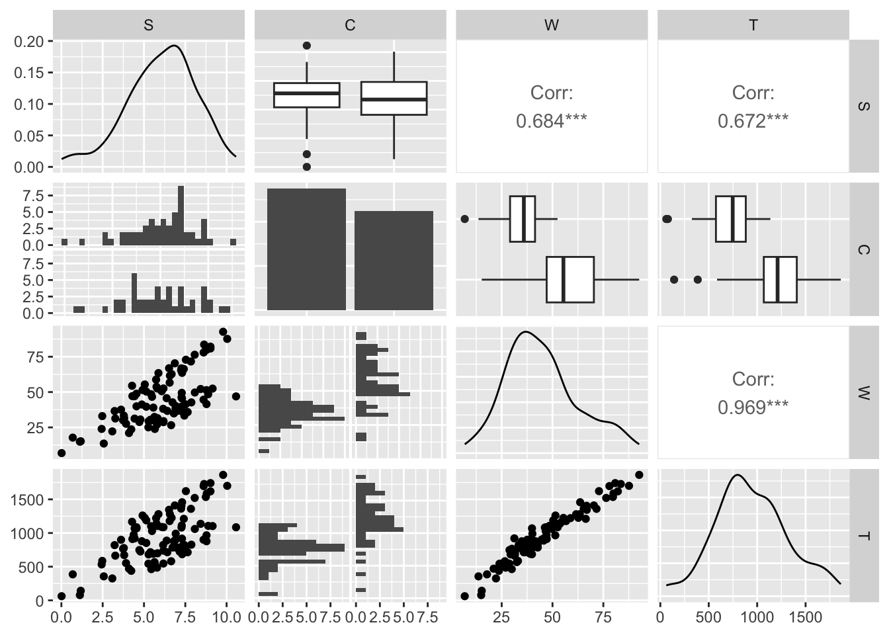
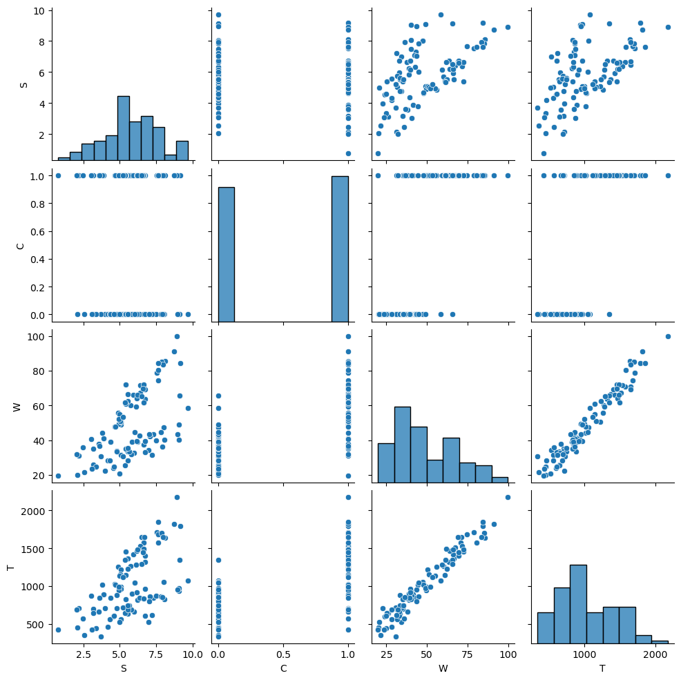
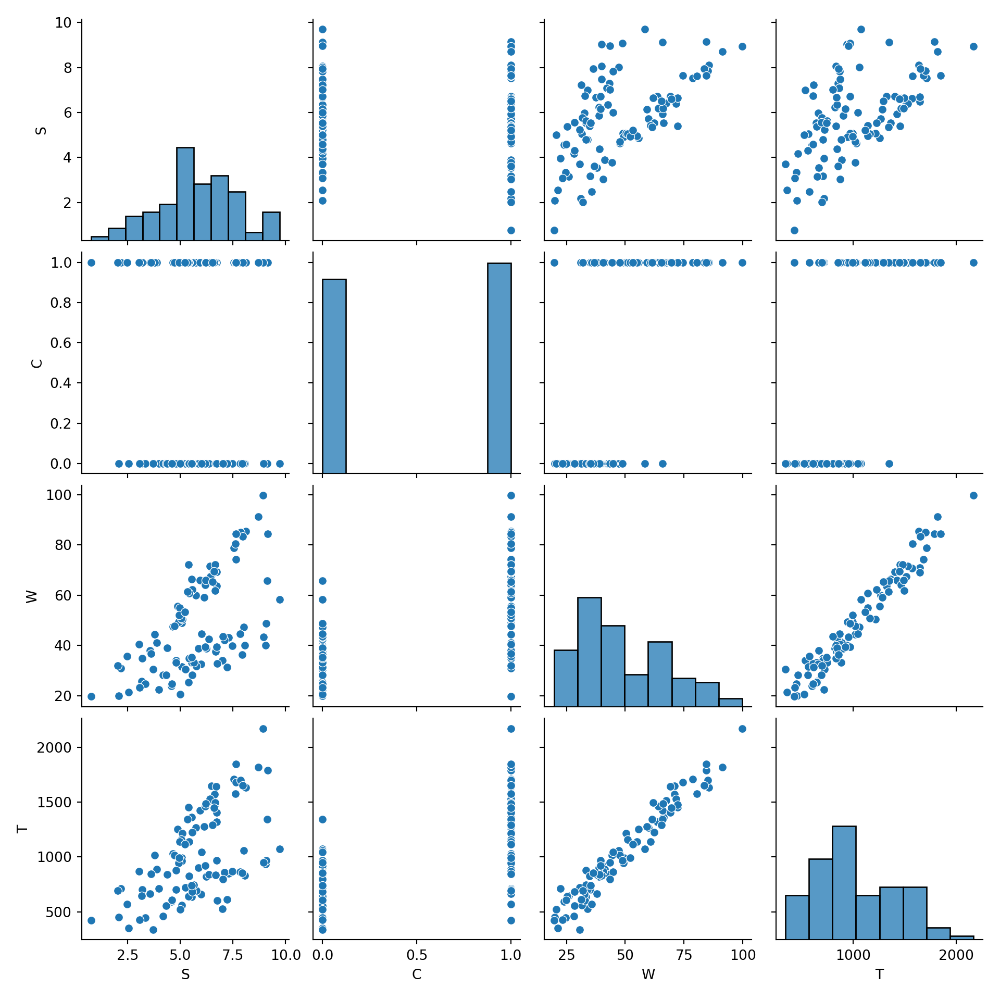
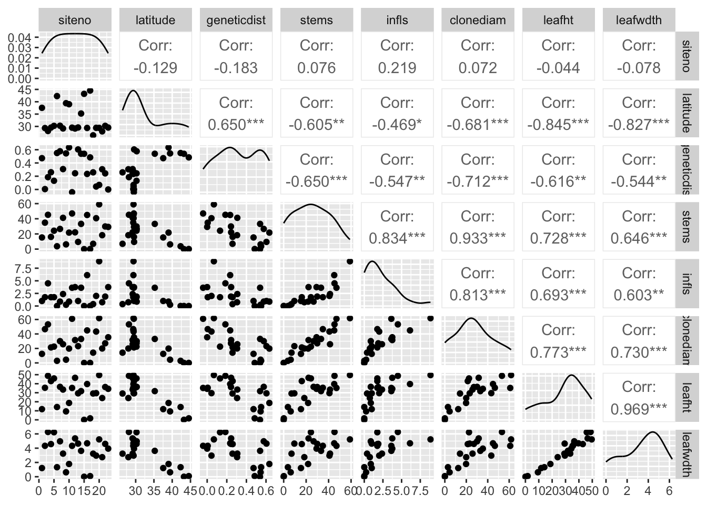
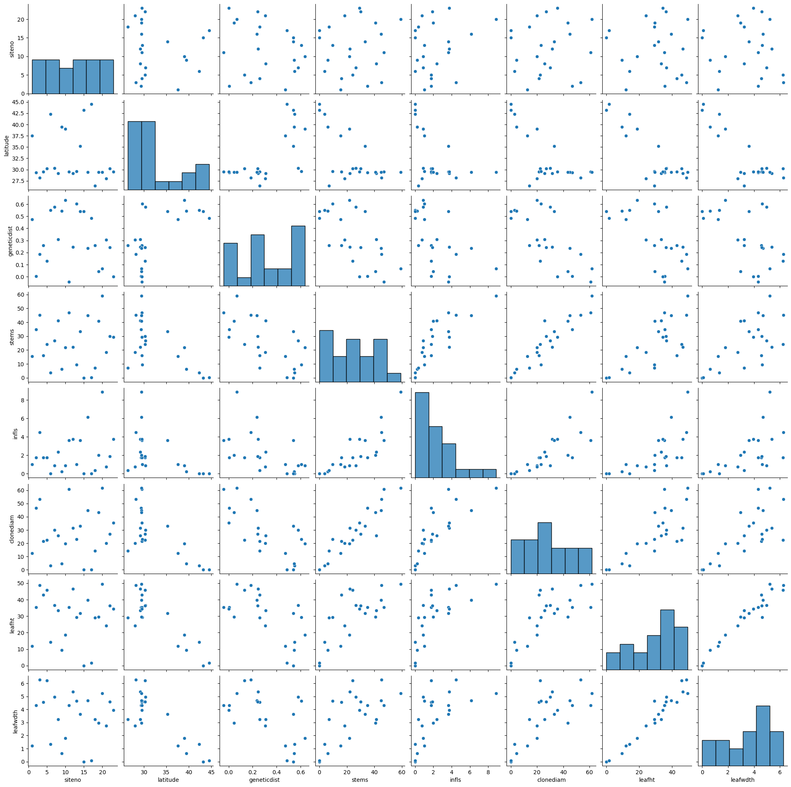
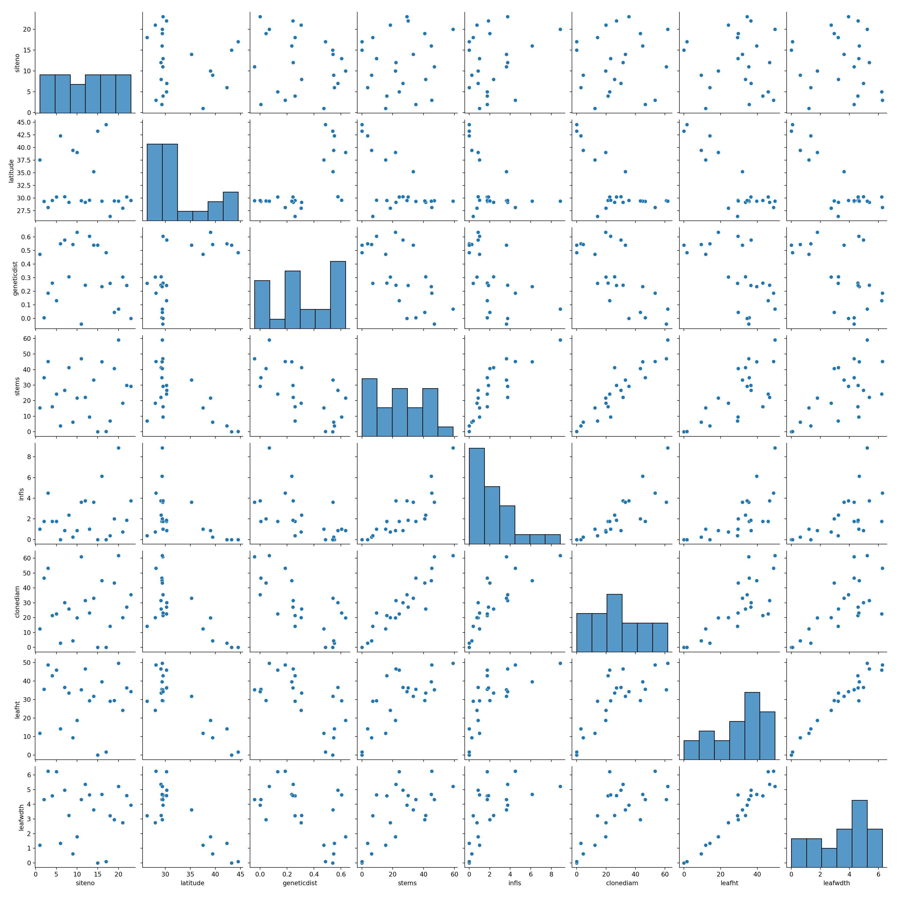
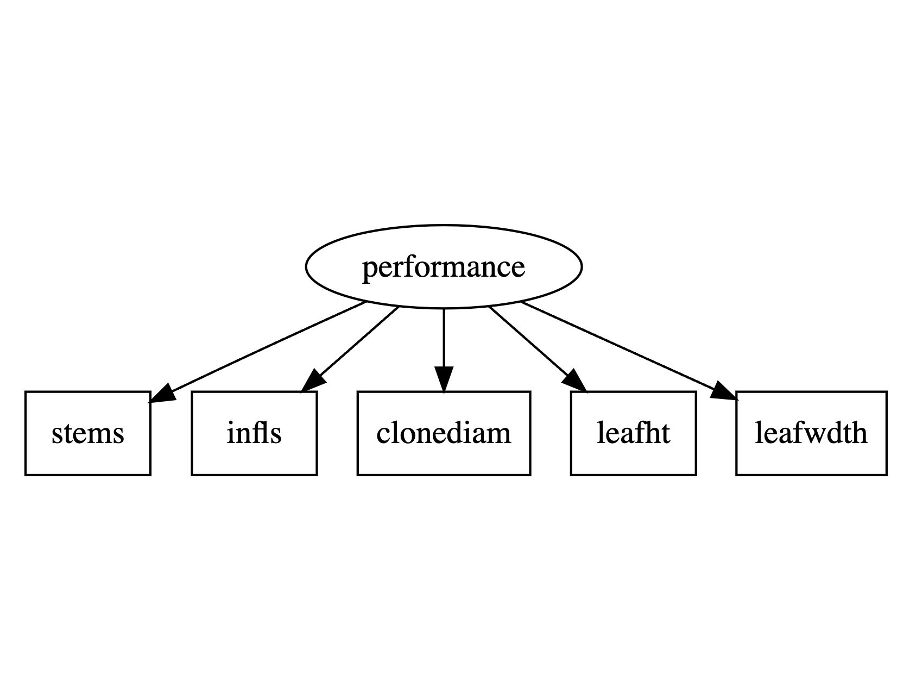

Warning: package 'reticulate' was built under R version 4.4.1GEOG 6960 Causality in Geog. Studies 9
Introduction
In this lab, we’re going to look at how to estimate moderation in causal models, and introduce working with latent variables. We’ll use a synthetic example, and a(nother) ecological dataset on plant adaptation from Travis and Grace (2010) (travis.csv).
Coding SEMs
Both R and Python have packages that allow you to create SEMs and estimate coefficients based on a dataset.
- R: lavaan and sem
- Python: semopy (
pip install semopy)
First load (or install and load) the relevant packages. We’ll need some additional packages to explore the data before model building.
library(tidyverse)
library(GGally)
library(lavaan)
library(lavaanPlot)import numpy as np
import pandas as pd
import seaborn as sns
import semopy
import statsmodels.api as sm
import statsmodels.formula.api as smfModeration
We’ll start with an example of moderation analysis. In contrast to mediation analysis, moderation assumes that one (or more) of the paths in the model has a coefficient that varies dependent on another variable. In statistical modeling this is referred to as an interaction term, and is pretty easy to incorporate. Having a moderation does present a problem, however, as the causal effect calculated across a path is not a single constant, but depends on the second, moderating variable
Example data
First, we’re going to create a synthetic dataset, that include a moderation effect. This will have 4 variables, which we will create as follows:
sa randomly distributed exogenous variable representing sleep: \(s ~ N(6, 2)\)ca random variable representing whether an individual is a coffee drinker or not (\([0,1]\))wan endogenous variable representing wakefulness: \(w = 10 + 4\times s + 5 \times c + N(0, 5)\)tthe outcome variable representing test scores: \(t = 50 + 20 \times w + N(0, 100)\)
Note that this implies no direct effect between c and w, just the moderation effect on s -> w.
set.seed(42)
N <- 100
S <- rnorm(N, 6, 2)
C <- sample(c(0,1), N, replace = TRUE)
W <- 10 + 4 * S + 4 * (S*C) + rnorm(N, 0, 5)
T <- 50 + 20 * W + rnorm(N, 0, 100)
df <- data.frame(S = S, C = as.factor(C), W = W, T = T)np.random.seed(42)
n = 100
S = np.random.normal(6, 2, n)
C = np.random.choice([0,1], n, replace=True)
W = 10 + 4 * S + 5 * (S*C) + np.random.normal(0, 5, n)
T = 50 + 20 * W + np.random.normal(0, 100, n)
# e = -0.4*a + -0.4*d + np.random.normal(0, 0.01, n)
df = pd.DataFrame({'S': S,
'C': C,
'W': W,
'T': T})As usual, we’ll do a little exploration of the data before moving on.
ggpairs(df)`stat_bin()` using `bins = 30`. Pick better value with `binwidth`.
`stat_bin()` using `bins = 30`. Pick better value with `binwidth`.
`stat_bin()` using `bins = 30`. Pick better value with `binwidth`.
sns.pairplot(df)

Path analysis
Moderation effects can be estimated directly through path analysis or using a structural equation model (SEM). We’ll start here with a path analysis. Note that this requires individual models to be built:
w ~ s + s:cwheres:crepresents the interaction between these terms
mod1 <- lm(W ~ S + S:C, df)
summary(mod1)
Call:
lm(formula = W ~ S + S:C, data = df)
Residuals:
Min 1Q Median 3Q Max
-10.5469 -3.1945 -0.1111 3.3638 10.9886
Coefficients:
Estimate Std. Error t value Pr(>|t|)
(Intercept) 8.8995 1.4446 6.161 1.65e-08 ***
S 4.2473 0.2342 18.133 < 2e-16 ***
S:C1 3.8373 0.1467 26.159 < 2e-16 ***
---
Signif. codes: 0 '***' 0.001 '**' 0.01 '*' 0.05 '.' 0.1 ' ' 1
Residual standard error: 4.671 on 97 degrees of freedom
Multiple R-squared: 0.934, Adjusted R-squared: 0.9327
F-statistic: 686.5 on 2 and 97 DF, p-value: < 2.2e-16mod1 = smf.ols(formula='W ~ S + S:C', data=df)
fit1 = mod1.fit()
print(fit1.summary()) OLS Regression Results
==============================================================================
Dep. Variable: W R-squared: 0.934
Model: OLS Adj. R-squared: 0.933
Method: Least Squares F-statistic: 686.5
Date: Sun, 10 Nov 2024 Prob (F-statistic): 5.53e-58
Time: 12:59:11 Log-Likelihood: -299.39
No. Observations: 100 AIC: 604.8
Df Residuals: 97 BIC: 612.6
Df Model: 2
Covariance Type: nonrobust
==============================================================================
coef std err t P>|t| [0.025 0.975]
------------------------------------------------------------------------------
Intercept 9.2986 1.650 5.634 0.000 6.023 12.574
S 4.3581 0.279 15.638 0.000 3.805 4.911
S:C 4.7255 0.162 29.164 0.000 4.404 5.047
==============================================================================
Omnibus: 6.036 Durbin-Watson: 2.033
Prob(Omnibus): 0.049 Jarque-Bera (JB): 5.813
Skew: 0.424 Prob(JB): 0.0547
Kurtosis: 3.822 Cond. No. 23.8
==============================================================================
Notes:
[1] Standard Errors assume that the covariance matrix of the errors is correctly specified.t ~ w
mod2 <- lm(T ~ W, df)
summary(mod2)
Call:
lm(formula = T ~ W, data = df)
Residuals:
Min 1Q Median 3Q Max
-257.620 -69.218 5.377 66.343 254.068
Coefficients:
Estimate Std. Error t value Pr(>|t|)
(Intercept) 33.735 25.233 1.337 0.184
W 20.261 0.521 38.890 <2e-16 ***
---
Signif. codes: 0 '***' 0.001 '**' 0.01 '*' 0.05 '.' 0.1 ' ' 1
Residual standard error: 93.29 on 98 degrees of freedom
Multiple R-squared: 0.9391, Adjusted R-squared: 0.9385
F-statistic: 1512 on 1 and 98 DF, p-value: < 2.2e-16mod2 = smf.ols(formula='T ~ W', data=df)
fit2 = mod2.fit()
print(fit2.summary()) OLS Regression Results
==============================================================================
Dep. Variable: T R-squared: 0.945
Model: OLS Adj. R-squared: 0.944
Method: Least Squares F-statistic: 1680.
Date: Sun, 10 Nov 2024 Prob (F-statistic): 1.75e-63
Time: 12:59:11 Log-Likelihood: -596.75
No. Observations: 100 AIC: 1197.
Df Residuals: 98 BIC: 1203.
Df Model: 1
Covariance Type: nonrobust
==============================================================================
coef std err t P>|t| [0.025 0.975]
------------------------------------------------------------------------------
Intercept 16.1156 26.374 0.611 0.543 -36.222 68.453
W 20.8035 0.508 40.986 0.000 19.796 21.811
==============================================================================
Omnibus: 1.840 Durbin-Watson: 2.286
Prob(Omnibus): 0.399 Jarque-Bera (JB): 1.322
Skew: -0.255 Prob(JB): 0.516
Kurtosis: 3.238 Cond. No. 144.
==============================================================================
Notes:
[1] Standard Errors assume that the covariance matrix of the errors is correctly specified.With these two models fit, we can estimate the causal effect using the product of the path coefficients. To get the effect for non-coffee drinkers, we ignore the interaction coefficient, giving:
c0 = coef(mod1)["S"] * coef(mod2)["W"]
c0 S
86.05462 c0 = fit1.params['S'] * fit2.params['W']
print(f'Non-coffee drinkers: {np.round(c0, 4)}')Non-coffee drinkers: 90.6638For coffee drinkers, we need to include this. Unlike the path coefficients, we simply add this to the effect of s -> w:
c1 = (coef(mod1)["S"] + coef(mod1)["S:C1"]) * coef(mod2)["W"]
c1 S
163.8022 c1 = (fit1.params['S'] + fit1.params['S:C']) * fit2.params['W']
print(f'Coffee drinkers: {np.round(c1, 4)}')Coffee drinkers: 188.9716The resulting effect is approximately twice that of non-coffee drinkers. To understand where this comes from, take another look at how the data were created. We used an effect of 4 for the path s -> w. The moderation effect was also 4, so effect for coffee drinkers should roughly double. Try re-running this but changing the moderation to a different value (e.g. 2) and see if you get the expected change
SEM
Next, we’ll fit the same model as a structural equation model. As a reminder, this will not give a different estimate of the effect, but will return standard errors on the moderation effect and the Chi-squared test on overall model fit.
In R, we’ll fit this with lavaan. This does not appear to accept the standard formula syntax for an interaction (:), so first we’ll calculate this by hand:
df = df %>%
mutate(C = as.numeric(C)-1,
S_C = S * C)Next, let’s create the lavaan model specification. The basic formula looks like this:
W ~ S + S_C
T ~ WHowever, it would be good to estimate the standard errors on the moderation term. To do this we use variables within the model call to represent the different path coefficients (a, b, c). We can then recombine these to create new values using the := syntax:
mod <-
"
## Structural effects
W ~ a*S + b*S_C
T ~ c*W
## Moderated effects
c0 := a * c
c1 := (a+b) * c
"Now let’s fit and show the model:
sem_mod <- sem(mod, df, fixed.x = FALSE)Warning: lavaan->lav_data_full():
some observed variances are (at least) a factor 1000 times larger than
others; use varTable(fit) to investigatesummary(sem_mod)lavaan 0.6-19 ended normally after 1 iteration
Estimator ML
Optimization method NLMINB
Number of model parameters 8
Number of observations 100
Model Test User Model:
Test statistic 0.516
Degrees of freedom 2
P-value (Chi-square) 0.773
Parameter Estimates:
Standard errors Standard
Information Expected
Information saturated (h1) model Structured
Regressions:
Estimate Std.Err z-value P(>|z|)
W ~
S (a) 4.247 0.231 18.412 0.000
S_C (b) 3.837 0.144 26.560 0.000
T ~
W (c) 20.261 0.516 39.284 0.000
Covariances:
Estimate Std.Err z-value P(>|z|)
S ~~
S_C 1.866 0.711 2.626 0.009
Variances:
Estimate Std.Err z-value P(>|z|)
.W 21.160 2.992 7.071 0.000
.T 8529.664 1206.277 7.071 0.000
S 4.294 0.607 7.071 0.000
S_C 10.948 1.548 7.071 0.000
Defined Parameters:
Estimate Std.Err z-value P(>|z|)
c0 86.055 5.162 16.671 0.000
c1 163.802 6.352 25.786 0.000At the end of the output, you should see the two causal effects (non-coffee and coffee drinkers).
lavaanPlot(sem_mod,
edge_options = list(color = "grey"),
coefs = TRUE)In Python, we’ll fit this with semopy. This does not appear to accept the standard formula syntax for an interaction (:), so first we’ll calculate this by hand:
df['S_C'] = df['S'] * df['C']Next, let’s create the lavaan model specification:
sem_formula = 'W ~ a*S + b*S_C\nT ~ c*W'Now let’s fit and show the model:
mod = semopy.Model(sem_formula)
res = mod.fit(df, obj='MLW')mod.inspect() lval op rval Estimate Std. Err z-value p-value
0 W ~ S 4.358928 0.274529 15.877864 0.000000e+00
1 W ~ S_C 4.725701 0.159618 29.606356 0.000000e+00
2 T ~ W 20.802434 1.513199 13.747323 0.000000e+00
3 W ~~ W 23.345719 3.301583 7.071068 1.537437e-12
4 T ~~ T 80993.529287 11454.214758 7.071068 1.537437e-12semopy.calc_stats(mod)[['chi2', 'chi2 p-value']] chi2 chi2 p-value
Value 135.147698 0.0Note that semopy does not allow for the estimation of the additional values, but we can do this as above, with the path models.
Latent variable models
We’ll now take a look at the use of latent variables (LVs) in these models. LVs represent unobserved variables, generally something that was not or cannot be measured. As these are unobserved, we use indicator variables to work with them. These (indicators) are variables in the system that are assumed to be expressions of latent variable, but that are measurable.
LVs are generally used represent larger, theoretical variables (especially in behavioral sciences), and have a role in explaining why the exogenous variables may be correlated (as they are driven by the LV).
Data
Let’s start by loading some data. These are observations from a paper by Travis and Grace (2010) on the growth of transplanted individuals of a plant species. The goal of the study is to understand if the degree of locality, represented by genetic distance from local populations, is related to a conceptual varaible describing plant performance. As this cannot be directly measured, the data instead contain a series of physical variables (e.g. diameter or number of stems) that can be measured. Let’s load the data and take a quick look.
travis <- read.csv("./data/travis.csv")
head(travis) siteno latitude geneticdist stems infls clonediam leafht leafwdth
1 1 37.54 0.47263 15.375 1.00 12.49625 11.83012 1.214805
2 2 29.34 0.00554 34.875 1.75 46.65625 35.50104 4.328820
3 3 28.15 0.18589 45.250 4.50 53.25000 48.74358 6.269271
4 4 29.53 0.25973 16.125 1.75 21.37500 42.90950 4.575165
5 5 30.23 0.13122 24.250 1.75 22.51750 45.86902 6.231427
6 6 42.30 0.55000 3.750 0.00 2.90000 14.14740 1.333766travis = pd.read_csv("./data/travis.csv")
travis.head() siteno latitude geneticdist stems infls clonediam leafht leafwdth
0 1 37.54 0.47263 15.375 1.00 12.49625 11.830123 1.214805
1 2 29.34 0.00554 34.875 1.75 46.65625 35.501039 4.328820
2 3 28.15 0.18589 45.250 4.50 53.25000 48.743576 6.269271
3 4 29.53 0.25973 16.125 1.75 21.37500 42.909499 4.575165
4 5 30.23 0.13122 24.250 1.75 22.51750 45.869016 6.231427ggpairs(travis)
sns.pairplot(travis)

Here’s the correlation matrix for the measured physical variables. Note that these are generally highly correlated, which suggests that there is a common cause:
cor(travis[, 4:8]) stems infls clonediam leafht leafwdth
stems 1.0000000 0.8339227 0.9333150 0.7275625 0.6457378
infls 0.8339227 1.0000000 0.8126388 0.6925888 0.6026302
clonediam 0.9333150 0.8126388 1.0000000 0.7729843 0.7296621
leafht 0.7275625 0.6925888 0.7729843 1.0000000 0.9687725
leafwdth 0.6457378 0.6026302 0.7296621 0.9687725 1.0000000travis = pd.read_csv("./data/travis.csv")
travis.head() siteno latitude geneticdist stems infls clonediam leafht leafwdth
0 1 37.54 0.47263 15.375 1.00 12.49625 11.830123 1.214805
1 2 29.34 0.00554 34.875 1.75 46.65625 35.501039 4.328820
2 3 28.15 0.18589 45.250 4.50 53.25000 48.743576 6.269271
3 4 29.53 0.25973 16.125 1.75 21.37500 42.909499 4.575165
4 5 30.23 0.13122 24.250 1.75 22.51750 45.869016 6.231427Measurement model
Based on this we can describe a measurement model, that relates the LV (performance) to the observed measurements. Latent variables are described with ~= syntax, with the LV on the left hand side and the measured, indicators on the right.

travis_latent_formula1 <- '
performance =~ stems + infls + clonediam + leafht + leafwdth
'travis = pd.read_csv("./data/travis.csv")
travis.head() siteno latitude geneticdist stems infls clonediam leafht leafwdth
0 1 37.54 0.47263 15.375 1.00 12.49625 11.830123 1.214805
1 2 29.34 0.00554 34.875 1.75 46.65625 35.501039 4.328820
2 3 28.15 0.18589 45.250 4.50 53.25000 48.743576 6.269271
3 4 29.53 0.25973 16.125 1.75 21.37500 42.909499 4.575165
4 5 30.23 0.13122 24.250 1.75 22.51750 45.869016 6.231427We can now estimate the model:
travis_latent_model1 <- sem(travis_latent_formula1, travis)Warning: lavaan->lav_object_post_check():
some estimated ov variances are negativesummary(travis_latent_model1)lavaan 0.6-19 ended normally after 82 iterations
Estimator ML
Optimization method NLMINB
Number of model parameters 10
Number of observations 23
Model Test User Model:
Test statistic 51.106
Degrees of freedom 5
P-value (Chi-square) 0.000
Parameter Estimates:
Standard errors Standard
Information Expected
Information saturated (h1) model Structured
Latent Variables:
Estimate Std.Err z-value P(>|z|)
performance =~
stems 1.000
infls 0.126 0.037 3.377 0.001
clonediam 1.160 0.309 3.751 0.000
leafht 1.215 0.244 4.971 0.000
leafwdth 0.151 0.031 4.822 0.000
Variances:
Estimate Std.Err z-value P(>|z|)
.stems 125.886 37.014 3.401 0.001
.infls 2.405 0.707 3.403 0.001
.clonediam 132.478 39.038 3.394 0.001
.leafht -1.847 5.336 -0.346 0.729
.leafwdth 0.223 0.105 2.131 0.033
performance 135.763 67.580 2.009 0.045travis = pd.read_csv("./data/travis.csv")
travis.head() siteno latitude geneticdist stems infls clonediam leafht leafwdth
0 1 37.54 0.47263 15.375 1.00 12.49625 11.830123 1.214805
1 2 29.34 0.00554 34.875 1.75 46.65625 35.501039 4.328820
2 3 28.15 0.18589 45.250 4.50 53.25000 48.743576 6.269271
3 4 29.53 0.25973 16.125 1.75 21.37500 42.909499 4.575165
4 5 30.23 0.13122 24.250 1.75 22.51750 45.869016 6.231427The output has changed a little, now we have information on the factor loadings under the heading Latent Variables:. The estimates here represent the loadings obtained from a factor analysis of the observed variables. These are standardized to the first variable (this will always be 1). Higher values indicate that a variable is a good representative of the LV, and lower values indicate that the variable is influenced by other factors in addition to the LV.
Two of the variables have fairly low values, but these are sensitive to the scale of the variables. Let’s re-run this now with scaled variables:
travis <- travis %>%
mutate(stems = (stems - mean(stems)) / sd(stems),
infls = (infls - mean(infls)) / sd(infls),
clonediam = (clonediam - mean(clonediam)) / sd(clonediam),
leafht = (leafht - mean(leafht)) / sd(leafht),
leafwdth = (leafwdth - mean(leafwdth)) / sd(leafwdth))
travis_latent_model1 <- sem(travis_latent_formula1, travis)
summary(travis_latent_model1)lavaan 0.6-19 ended normally after 25 iterations
Estimator ML
Optimization method NLMINB
Number of model parameters 10
Number of observations 23
Model Test User Model:
Test statistic 55.494
Degrees of freedom 5
P-value (Chi-square) 0.000
Parameter Estimates:
Standard errors Standard
Information Expected
Information saturated (h1) model Structured
Latent Variables:
Estimate Std.Err z-value P(>|z|)
performance =~
stems 1.000
infls 0.891 0.134 6.667 0.000
clonediam 1.023 0.092 11.082 0.000
leafht 0.849 0.144 5.885 0.000
leafwdth 0.790 0.157 5.035 0.000
Variances:
Estimate Std.Err z-value P(>|z|)
.stems 0.091 0.043 2.128 0.033
.infls 0.269 0.086 3.116 0.002
.clonediam 0.050 0.037 1.357 0.175
.leafht 0.333 0.104 3.193 0.001
.leafwdth 0.416 0.128 3.255 0.001
performance 0.866 0.283 3.063 0.002travis = pd.read_csv("./data/travis.csv")
travis.head() siteno latitude geneticdist stems infls clonediam leafht leafwdth
0 1 37.54 0.47263 15.375 1.00 12.49625 11.830123 1.214805
1 2 29.34 0.00554 34.875 1.75 46.65625 35.501039 4.328820
2 3 28.15 0.18589 45.250 4.50 53.25000 48.743576 6.269271
3 4 29.53 0.25973 16.125 1.75 21.37500 42.909499 4.575165
4 5 30.23 0.13122 24.250 1.75 22.51750 45.869016 6.231427And plot the resulting model.
lavaanPlot(travis_latent_model1, coefs = TRUE, covs = TRUE)travis = pd.read_csv("./data/travis.csv")
travis.head() siteno latitude geneticdist stems infls clonediam leafht leafwdth
0 1 37.54 0.47263 15.375 1.00 12.49625 11.830123 1.214805
1 2 29.34 0.00554 34.875 1.75 46.65625 35.501039 4.328820
2 3 28.15 0.18589 45.250 4.50 53.25000 48.743576 6.269271
3 4 29.53 0.25973 16.125 1.75 21.37500 42.909499 4.575165
4 5 30.23 0.13122 24.250 1.75 22.51750 45.869016 6.231427In the results, we got a significant Chi-squared test. This suggests that some information is lacking in the model. We can use the modification indices to try and work out what might be missing. As a reminder, these show how much the model would improve if a given path is included in the model (look for high values in the mi column):
modindices(travis_latent_model1) lhs op rhs mi epc sepc.lv sepc.all sepc.nox
12 stems ~~ infls 1.522 0.062 0.062 0.395 0.395
13 stems ~~ clonediam 5.229 0.152 0.152 2.252 2.252
14 stems ~~ leafht 2.293 -0.077 -0.077 -0.445 -0.445
15 stems ~~ leafwdth 4.728 -0.117 -0.117 -0.601 -0.601
16 infls ~~ clonediam 1.068 -0.052 -0.052 -0.448 -0.448
17 infls ~~ leafht 0.018 0.009 0.009 0.031 0.031
18 infls ~~ leafwdth 0.259 -0.038 -0.038 -0.114 -0.114
19 clonediam ~~ leafht 0.739 -0.043 -0.043 -0.334 -0.334
20 clonediam ~~ leafwdth 0.012 -0.006 -0.006 -0.040 -0.040
21 leafht ~~ leafwdth 22.276 0.388 0.388 1.041 1.041travis = pd.read_csv("./data/travis.csv")
travis.head() siteno latitude geneticdist stems infls clonediam leafht leafwdth
0 1 37.54 0.47263 15.375 1.00 12.49625 11.830123 1.214805
1 2 29.34 0.00554 34.875 1.75 46.65625 35.501039 4.328820
2 3 28.15 0.18589 45.250 4.50 53.25000 48.743576 6.269271
3 4 29.53 0.25973 16.125 1.75 21.37500 42.909499 4.575165
4 5 30.23 0.13122 24.250 1.75 22.51750 45.869016 6.231427The largest value is for the path leafht ~~ leafwdth. The double ~~ represents a missing covariance or correlation between variables (here between the width and length of a leaf). We’ll include this now and re-run the model. (Note that you could argue for a latent variable representing leaf size that links to both of these.)
travis_latent_formula2 <- '
performance =~ stems + infls + clonediam + leafht + leafwdth
leafht ~~ leafwdth
'
travis_latent_model2 <- sem(travis_latent_formula2, travis)
summary(travis_latent_model2)lavaan 0.6-19 ended normally after 41 iterations
Estimator ML
Optimization method NLMINB
Number of model parameters 11
Number of observations 23
Model Test User Model:
Test statistic 7.410
Degrees of freedom 4
P-value (Chi-square) 0.116
Parameter Estimates:
Standard errors Standard
Information Expected
Information saturated (h1) model Structured
Latent Variables:
Estimate Std.Err z-value P(>|z|)
performance =~
stems 1.000
infls 0.884 0.123 7.173 0.000
clonediam 0.989 0.087 11.319 0.000
leafht 0.800 0.145 5.509 0.000
leafwdth 0.727 0.160 4.529 0.000
Covariances:
Estimate Std.Err z-value P(>|z|)
.leafht ~~
.leafwdth 0.403 0.128 3.156 0.002
Variances:
Estimate Std.Err z-value P(>|z|)
.stems 0.056 0.040 1.404 0.160
.infls 0.252 0.082 3.085 0.002
.clonediam 0.075 0.042 1.792 0.073
.leafht 0.380 0.118 3.227 0.001
.leafwdth 0.481 0.147 3.283 0.001
performance 0.901 0.284 3.173 0.002lavaanPlot(travis_latent_model2, coefs = TRUE, covs = TRUE)travis = pd.read_csv("./data/travis.csv")
travis.head() siteno latitude geneticdist stems infls clonediam leafht leafwdth
0 1 37.54 0.47263 15.375 1.00 12.49625 11.830123 1.214805
1 2 29.34 0.00554 34.875 1.75 46.65625 35.501039 4.328820
2 3 28.15 0.18589 45.250 4.50 53.25000 48.743576 6.269271
3 4 29.53 0.25973 16.125 1.75 21.37500 42.909499 4.575165
4 5 30.23 0.13122 24.250 1.75 22.51750 45.869016 6.231427This has fixed the problem and we now have a non-significant Chi-squared test.
Structural model
The measurement model (above) is used to describe the relationship between an LV and the observed variables that represent it. We can go further by linking this to an observed outcome in a structural model. (Note that you can also use LVs with the outcome, but we won’t cover that here.)
To do this, we need to expand the model formula to include both the measurement and strucutral model. We’ll also keep the covariance between the two leaf variables.
travis_path_formula1 <- '
# meaasurement model
performance =~ stems + infls + clonediam + leafht + leafwdth
# structural model
performance ~ geneticdist
# correlated errors
leafht ~~ leafwdth
'travis = pd.read_csv("./data/travis.csv")
travis.head() siteno latitude geneticdist stems infls clonediam leafht leafwdth
0 1 37.54 0.47263 15.375 1.00 12.49625 11.830123 1.214805
1 2 29.34 0.00554 34.875 1.75 46.65625 35.501039 4.328820
2 3 28.15 0.18589 45.250 4.50 53.25000 48.743576 6.269271
3 4 29.53 0.25973 16.125 1.75 21.37500 42.909499 4.575165
4 5 30.23 0.13122 24.250 1.75 22.51750 45.869016 6.231427Now let’s fit and check the model:
travis_path_model1 <- sem(travis_path_formula1, travis)
summary(travis_path_model1)lavaan 0.6-19 ended normally after 46 iterations
Estimator ML
Optimization method NLMINB
Number of model parameters 12
Number of observations 23
Model Test User Model:
Test statistic 12.237
Degrees of freedom 8
P-value (Chi-square) 0.141
Parameter Estimates:
Standard errors Standard
Information Expected
Information saturated (h1) model Structured
Latent Variables:
Estimate Std.Err z-value P(>|z|)
performance =~
stems 1.000
infls 0.887 0.128 6.929 0.000
clonediam 1.007 0.088 11.508 0.000
leafht 0.817 0.146 5.601 0.000
leafwdth 0.746 0.160 4.650 0.000
Regressions:
Estimate Std.Err z-value P(>|z|)
performance ~
geneticdist -3.124 0.687 -4.547 0.000
Covariances:
Estimate Std.Err z-value P(>|z|)
.leafht ~~
.leafwdth 0.388 0.123 3.145 0.002
Variances:
Estimate Std.Err z-value P(>|z|)
.stems 0.072 0.039 1.835 0.067
.infls 0.261 0.084 3.108 0.002
.clonediam 0.059 0.038 1.570 0.116
.leafht 0.367 0.114 3.222 0.001
.leafwdth 0.464 0.142 3.278 0.001
.performance 0.441 0.145 3.039 0.002travis = pd.read_csv("./data/travis.csv")
travis.head() siteno latitude geneticdist stems infls clonediam leafht leafwdth
0 1 37.54 0.47263 15.375 1.00 12.49625 11.830123 1.214805
1 2 29.34 0.00554 34.875 1.75 46.65625 35.501039 4.328820
2 3 28.15 0.18589 45.250 4.50 53.25000 48.743576 6.269271
3 4 29.53 0.25973 16.125 1.75 21.37500 42.909499 4.575165
4 5 30.23 0.13122 24.250 1.75 22.51750 45.869016 6.231427The model shows a good fit, and a significant negative relationship between plant performance and genetic distance. This supports a general hypothesis that non-local plant tend to not grow (or perform) as well as local populations.
lavaanPlot(travis_path_model1, coefs = TRUE, covs = TRUE)travis = pd.read_csv("./data/travis.csv")
travis.head() siteno latitude geneticdist stems infls clonediam leafht leafwdth
0 1 37.54 0.47263 15.375 1.00 12.49625 11.830123 1.214805
1 2 29.34 0.00554 34.875 1.75 46.65625 35.501039 4.328820
2 3 28.15 0.18589 45.250 4.50 53.25000 48.743576 6.269271
3 4 29.53 0.25973 16.125 1.75 21.37500 42.909499 4.575165
4 5 30.23 0.13122 24.250 1.75 22.51750 45.869016 6.231427Summary
TBD
Appendix: Data files
Tavis and Grace dataset travis.csv
| Column header | Variable |
|---|---|
| siteno | Distance to coast (m) |
| latitude | Elevation a.s.l. |
| geneticdist | Genetic dissimilarity to local populations |
| stems | Stem density |
| infls | Number of infloresences |
| clonediam | Clone diameter |
| leafht | Leaf height |
| leafwdth | Leaf width |
stem density, the number of infloresences, clone diameter,